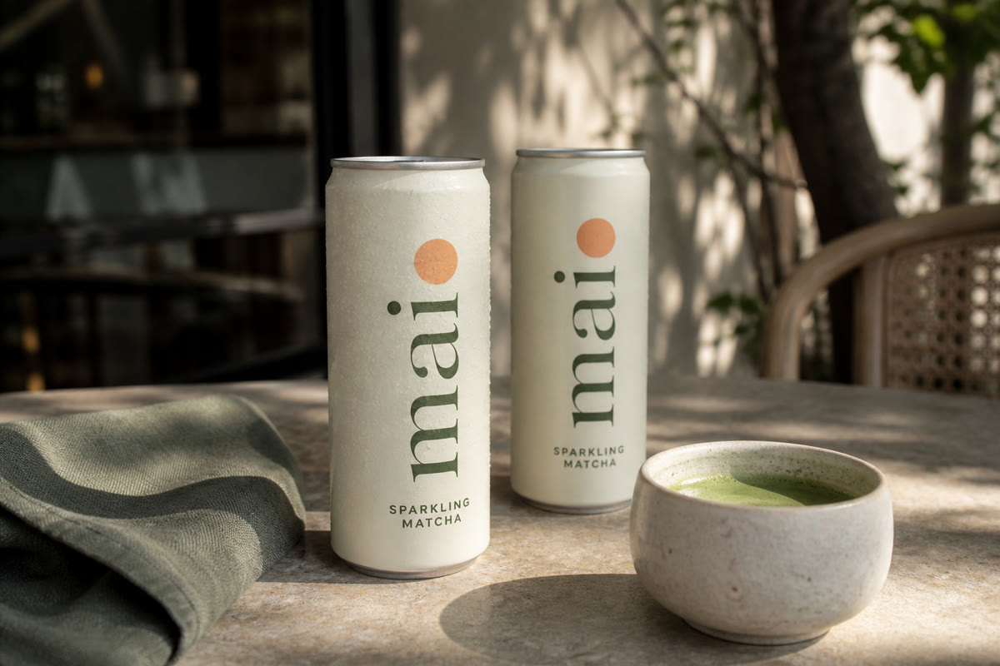
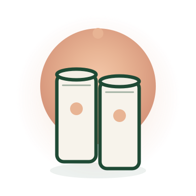

Most energy drinks are loud.
Mai is deliberate.
We built Mai for clear mornings, deep work, and long days that need steadiness, not spikes. Real matcha. Quiet bubbles. A pinch of sea salt.
Join the first drop


The people
Sam and Stephen met in college.
Both like the idea of caffeine more than what it usually does to them — the jitter, the crash, the drinks that treat energy like a stunt. They wanted something they could open on a clear morning and still feel like themselves at four in the afternoon.
Matcha was the closest. The sparkling cans on the shelf were not. Too loud. Too sweet. Too much like soda wearing a green costume.
So they made Mai. Lightly sparkling, real matcha, a light sweetness. Then, round after round in a food lab in Denver, the cans they kept reaching for were the ones with a pinch of sea salt. It made the matcha taste brighter and rounder, like the first breath of air on a cold coast. That’s the whole story. Two friends. One drink they actually wanted to keep around.
The drink
Not an energy drink. Not a heavy latte.
Mai is premium, lightly sparkling matcha. A short list built around real matcha and a pinch of sea salt, with a light touch of sweetness and quiet carbonation. The full ingredient list comes with the first drop.
- Real matcha. The kind meant for focus, not flavoring in a loud can.
- A pinch of sea salt. Softens the bitter edge, brightens the finish.
- Quiet bubbles. Crisp enough to feel awake, soft enough to sip through work.
- Lightly sweetened. A little lift. Not a sugar rush.